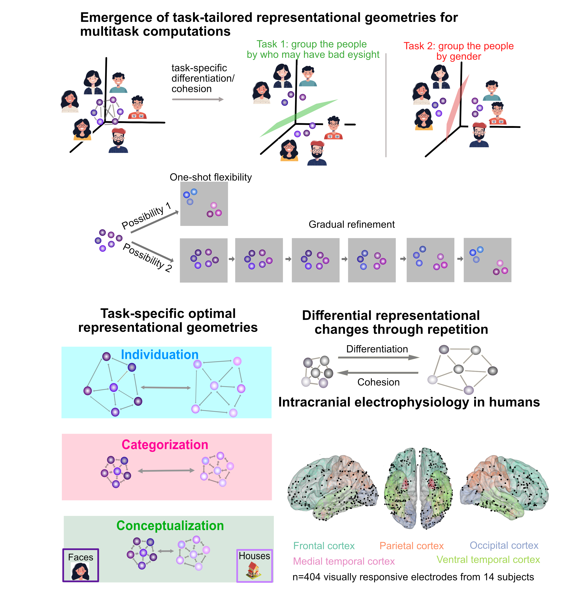
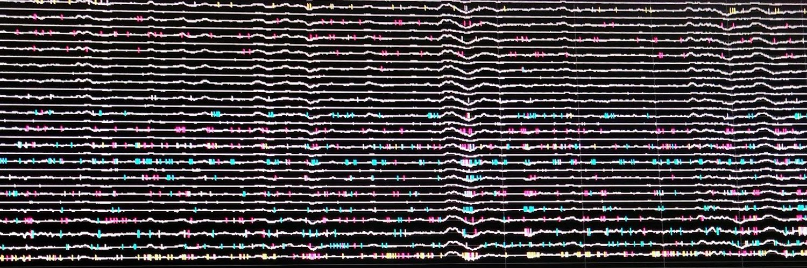

Completed Projects
Predictions enable top-down pattern separation in the macaque face-processing hierarchy.

Distinguishing faces requires well distinguishable neural activity patterns. Contextual information may separate neural representations, leading to enhanced identity recognition. Here, we use functional magnetic resonance imaging to investigate how predictions derived from contextual information affect the separability of neural activity patterns in the macaque face-processing system, a 3-level processing hierarchy in ventral visual cortex. We find that in the presence of predictions, early stages of this hierarchy exhibit well separable and high-dimensional neural geometries resembling those at the top of the hierarchy. This is accompanied by a systematic shift of tuning properties from higher to lower areas, endowing lower areas with higher-order, invariant representations instead of their feedforward tuning properties. Thus, top-down signals dynamically transform neural representations of faces into separable and high-dimensional neural geometries. Our results provide evidence how predictive context transforms flexible representational spaces to optimally use the computational resources provided by cortical processing hierarchies for better and faster distinction of facial identities.
2) Multiple task-demands flexibly optimize neural geometry in human ventral temporal cortex.
🔥Humans can perform multiple, including entirely new tasks- just through verbal instructions. This rapid flexibility is a hallmark of human intelligence and lets us adapt to new situations and changing environments. How does the human brain do it? (1/10)
⚙️We achieve this by flexibly reuse prior knowledge (compositionality) & reshaping neural geometry. By expanding task-relevant dimensions and compressing irrelevant ones, the brain configures task-optimal geometries, allowing multiple tasks on the same inputs. (2/10)
🎯 Humans can generalize instantly—kids infer what a green apple looks like, never having seen it this suggests instant task-tailored transformation. But hold on, let’s not break old knowledge based on 1 weird experience: this suggests neural representations gradually change. (3/10)
❓Do neural representations reconfigure instantly for new tasks, or do neural patterns adapt gradually, needing repeated experience, as one would expect from distributed representations that in neocortex? (4/10)
🧠Humans who do 3 different tasks, flexibly forming categories or abstract concepts on each trial - and we recorded neural activity intracranially from multiple brain areas. (5/10)
🌀 What we found was surprising! Participants performed the task one-shot, but neural representations don’t become task-tailored instantaneously in any of the brain areas. Instead, the representations become optimal through gradual refinement (6/10)
👁️Interestingly, we find gradual transformation for all the 3 tasks only in the ventral temporal cortex, which is traditionally thought to be a sensory area. This challenges the notion that sensory neural codes are stable, simply representing the external world. (7/10)
💥We find that mental flexibility arises by reconfiguring multipurpose, shared neural representations in the sensory areas to rapidly perform multiple tasks. This happens much earlier in the cortical processing hierarchy than previously thought. (8/10)
🧩 Wonder why neural representations don’t instantly become task-tailored? A computational trade-off may explain it: reusing shared representations allows quick, “good-enough” performance across tasks. ⚡(9/10)
⏳The cost? Interference. Task-specialization only emerges through repeated exposure, gradually refining representations and improving performance over time. (10/10)
Ongoing Projects
1) Feature specific bi-directional exchange of predictions and prediction errors in the macaque face-processing network.
This project investigates the interplay of predictions and prediction errors in the macaque face-processing network using simultaneous electrophysiology recordings in two face areas known to have feedforward and feedback connections.
2) How predictions derived from motion facilitate processing of static information in faces, i.e. identity recognition?
Electrophysiology in the macaque face-processing areas
3) Other ongoing collaborative projects
- How neural entrainment to environmental structure affects neural codes for face processing
- Re-emergence of orientation coding in primate IT cortex and deep networks reveals functional hubs for visual processing Link to the paper